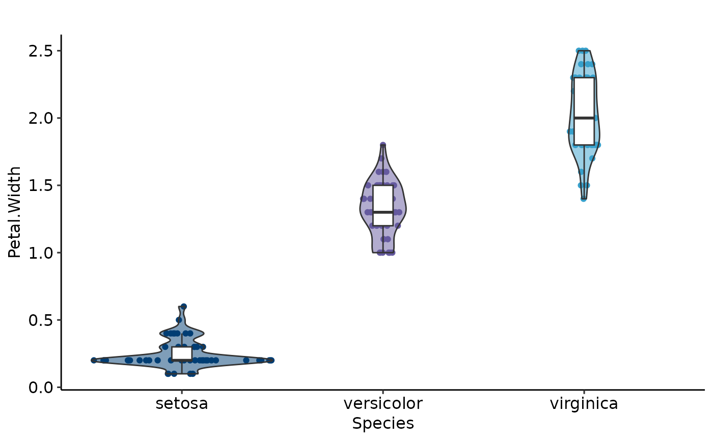
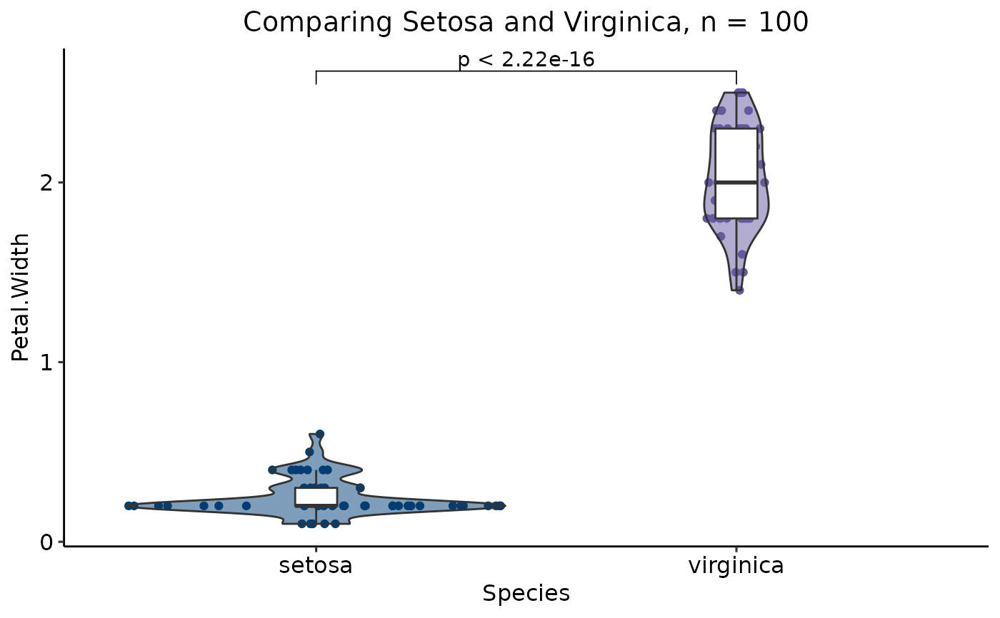

Create violin-boxplots
violinplotter.RdEnables the creation of violin-boxplots in a convenient and customizable manner.
Usage
violinplotter(
data,
x_val,
y_val,
x_lab = x_val,
y_lab = y_val,
title = "",
filter = F,
filter_col = NA,
filter_val = NA,
comp_vec = NA,
col_vec = NA,
scale_labs = ggplot2::waiver(),
fill_vec = NA,
col_style = "light",
fill_style = "light",
display_n = T,
violin_alpha = 0.5
)Arguments
- data
The
data.frameto be used for the visualization.- x_val
string, the name of the column to plot on the x axis.
- y_val
string, the name of the column to plot on the y axis.
- x_lab
string, the x axis label. Default is the string passed into
x_val.- y_lab
string, the y axis label. Default is the string passed into
y_val.- title
string, the title of the plot to be displayed on top. Default is
"".- filter
boolean, if
TRUE, it allows filtering ofdata. Default isFALSE.- filter_col
string, the name of the column to filter if
filter = TRUE. Default isNA.- filter_val
vector, the values to keep if
filter = TRUE.- comp_vec
list of vectors containing the comparisons to be passed into
stat_compare_means. Default isNA, and in this case, no comparisons are made.- col_vec
vector containing the colors to be used for the
coloraesthetic. Default isNA. If unspecified, the function usesau_colors().- scale_labs
vector, names to display on the x axis ticks. By default, it shows the names as they appear in
x_val.- fill_vec
vector containing the colors to be used for the
fillaesthetic. Default isNA. If unspecified, the function usesau_colors().- col_style
string, palette style to be used for
scale_color_au. Default islight. Style is only applied ifcol_vecremainsNA.- fill_style
string, palette style to be used for
scale_fill_au. Default islight. Style is only applied iffill_vecremainsNA.- display_n
boolean, if
TRUE, the plot displays the sample size appended to the title. Default isTRUE.- violin_alpha
num, opacity of the violin plot. Default is
0.5.
Examples
violinplotter(data = iris, x_val = "Species", y_val = "Petal.Width",
display_n = FALSE)

violinplotter(data = iris, x_val = "Species", y_val = "Petal.Width",
filter = TRUE, filter_col = "Species", filter_val = c("setosa", "virginica"),
comp_vec = list(c("setosa", "virginica")), title = "Comparing Setosa and Virginica")
